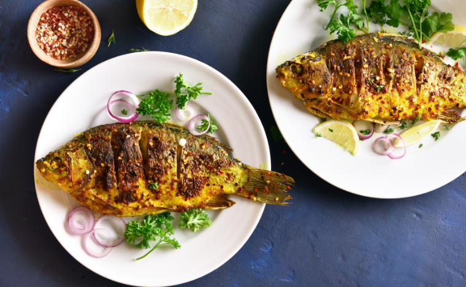

Amazing Zambezi Baked Fish
This method is a classic way to cook fish in Zambia and it would
traditionally be done over hot coals. The fish also tends to be
freshwater fish and works beautifully with the spices. Fresh water fish
is a bit of a delicacy and not everyone’s first choice when it comes to
fish due to the strong flavour.
Ingredients
- 2 whole sea bream (sea bass fillets if you prefer)
- 1 onion, sliced
- 1 green pepper, chopped
- 1 tomato, chopped
- 3 garlic cloves
- 2cm piece of ginger
- 1 red chilli
- ½ tsp salt
- Half a lemon
- Fresh coriander (optional)
- ½ tsp chilli flakes
Fish Masala Ingredients
- 2 tsp coriander seeds
- 2 tsp cumin seeds
- ½ tsp black peppercorns
- 5 curry leaves
- ½ tsp turmeric
- 1 tsp chilli powder
- 1 tsp methi/dried fenugreek leaves
- 1-2 tsbp vegetable oil
Steps/Instructions
- Heat your oven to 180ºC
-
Remove any scales, clean and wash the fish. With a sharp knife make 3
or 4 slits on the outside of the fish on both sides. Set to one side.
-
In a pestle and mortar crush the coriander seeds, cumin seeds, black
peppercorns and place into a bowl.
-
Chop the curry leaves and add to the bowl with the turmeric, chilli
powder and methi. Stir in the oil to make a paste.
- Slice the ginger, garlic and chillies.
-
Chop the peppers and tomato, slice the onion and mix with the ginger,
garlic and chillies.
-
Smear some of the spice mix inside the fish and then stuff it with the
onion mixture. Smear the remaining fish masala all over the outside of
the fish.
- Place the fish onto some foil and fold it to seal neatly.
-
Place of a baking sheet and cook for 20-30 minutes until cooked
through. This can also be cooked on the BBQ for a smoky flavour.
-
Once cooked, remove from the oven and open up the parcel with will be
aromatic and delicious. You can put this under a hot grill for a few
minutes to crispy up if you want to.
-
Serve with some cooked rice, a squeeze of lemon juice and a sprinkle
of coriander. I also like to add a few chilli flakes.